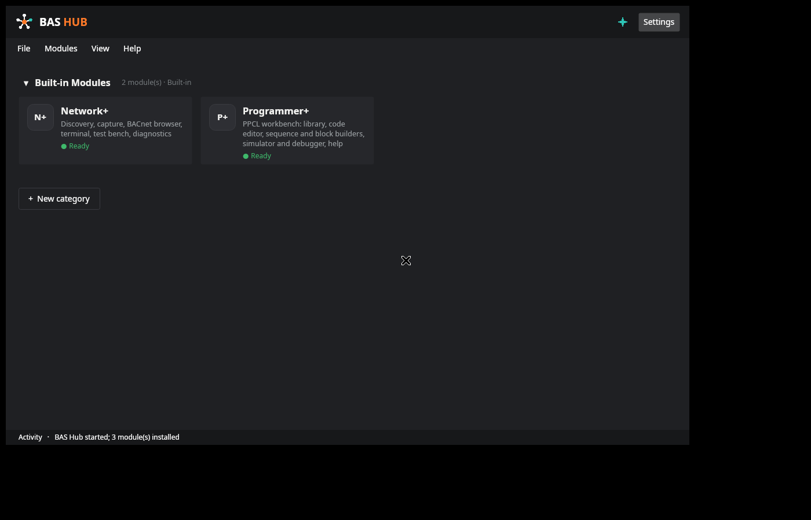
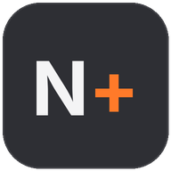
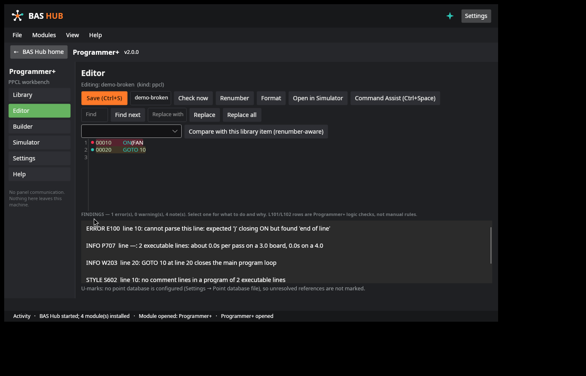
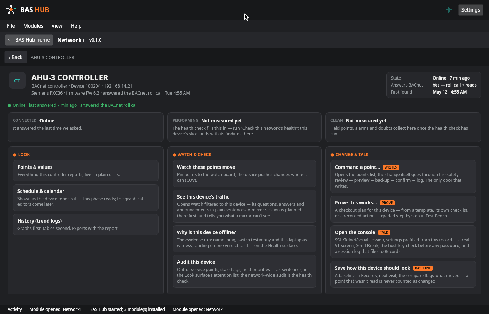
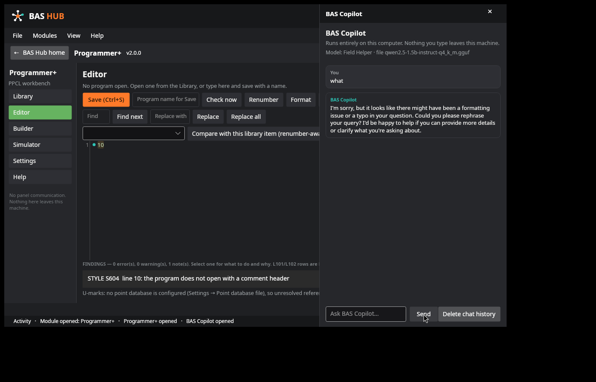
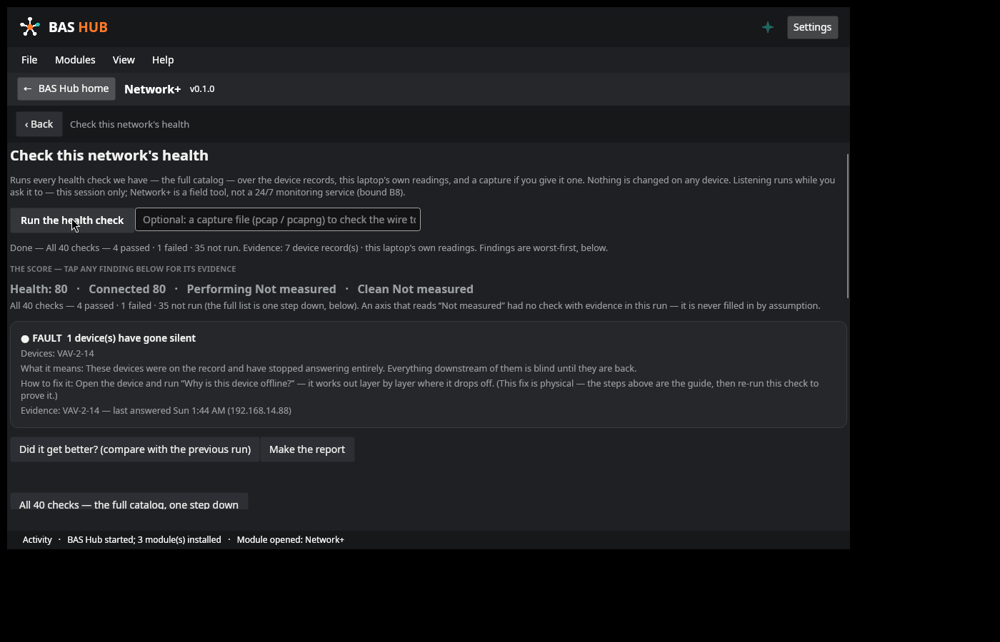
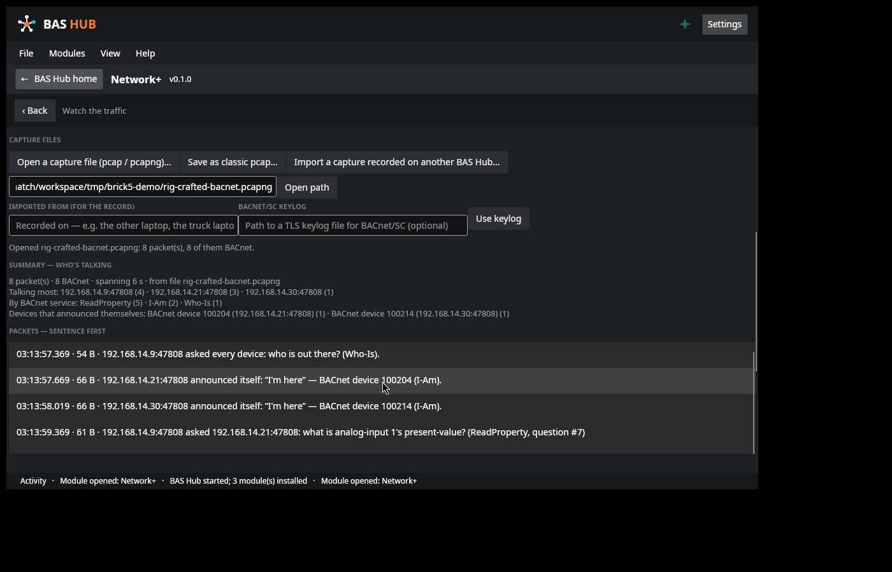
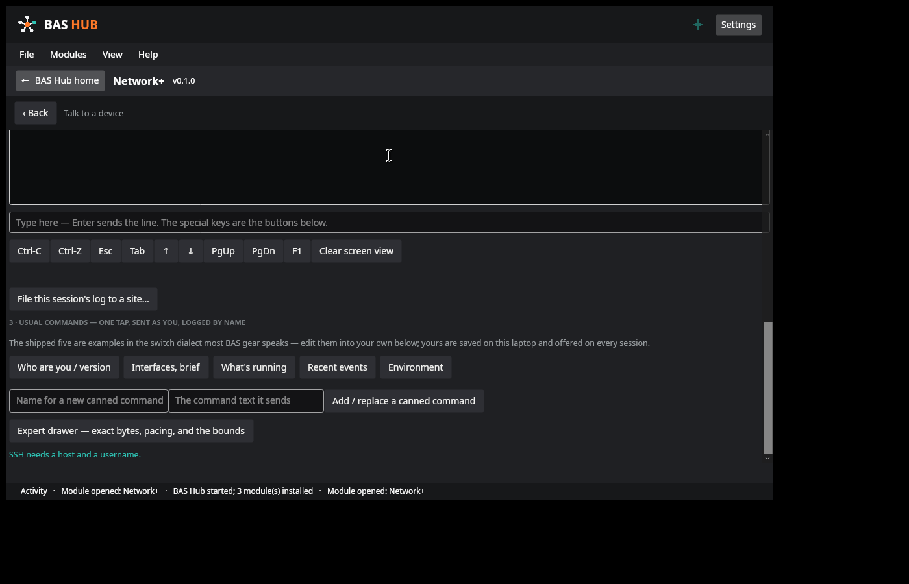
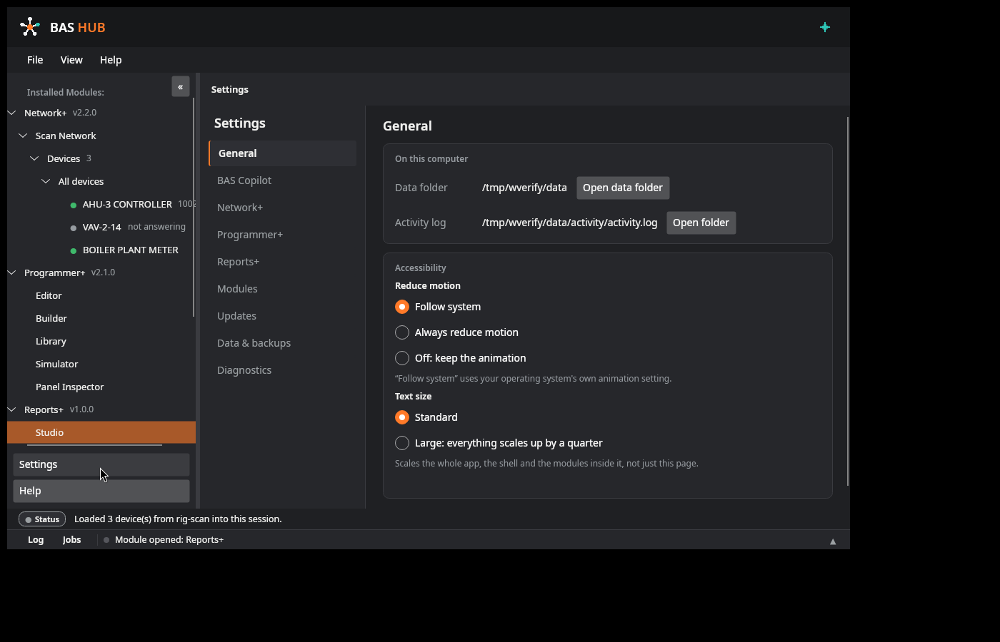

The Hub
The home screen and launcher. Your modules as tiles, your own categories of shortcuts to the tools you already use, one settings home.
See the home screen →Desktop suite — building-automation controls — Build 0.9.1
One app for controls field work.
A desktop suite for building-automation controls work. Instead of a pocketful of separate tools — one for programming, one for discovery, one for captures, one for the terminal, a spreadsheet for the records — BAS Hub is one app whose modules share one device inventory, one backup system, and one standard of care.
Programmer+ · Network+ · BAS Copilot (optional)

The current build, as it opens. Modules as tiles with earned ready states; your own categories and shortcuts below them. This is the shipping build's home screen, captured on its test rig.
01 · The demo
Home → Network+ → Health → Programmer+. No mockups — every screenshot on this site is the real app.
The full 26-second loop, recorded on the test rig — shown as a still until you press Play, so the page never moves on its own.
02 · Who it's for
Controls technicians and engineers who commission, service, and troubleshoot building automation systems: BACnet networks that misbehave, PPCL programs that need writing or fixing, devices that need proving before you leave the site. BAS Hub's screens start from the job you came to do, not from the protocol underneath it.
| The job | The usual sprawl | In BAS Hub |
|---|---|---|
| Keep track of devices | Every tool keeps its own list — or a spreadsheet does | One inventory every module shares; find a device once, use it everywhere |
| Write and check a PPCL program | An editor here, a separate checker there, files passed by hand | Editor, checks, builder, simulator, and debugger in one workbench |
| Change something on a live controller | Command it and rely on your own ritual for safety | Preview → backup → confirm → verify → rollback, the same path every time |
| Read a packet capture | Raw hex and a protocol reference open beside it | Plain sentences first, full decode underneath |
| Know whether the network is healthy | Gut feel and spot checks | A 40-check catalog whose score always shows its findings |
| Get a second pair of eyes | A cloud chatbot — and your site data on someone else's server | BAS Copilot: optional, on-device — or not installed at all |
03 · Modules
A device you find in Network+ is the same record everywhere. A write to a live controller goes through the same safety path every time. Your data lives on your laptop, in one folder, and nothing leaves it unless you send it.
The home screen and launcher. Your modules as tiles, your own categories of shortcuts to the tools you already use, one settings home.
See the home screen →The PPCL workbench: editor, block builder, simulator and debugger, point database, and code library.
Explore Programmer+ →
The network workbench: find devices, look at them, watch traffic, check health, prove changes, talk, and keep records.
Explore Network+ →An assistant that runs entirely on your computer. If you don't install it, there is no chat surface anywhere in BAS Hub.
How Copilot works →04 · On stage
Scroll, and the stage changes hands: the home screen, the programming workbench, the network workbench, and the optional assistant — each with the facts that define it. (With reduced motion set, the stage unpins and every module simply follows its text.)
One launcher for the suite. Installed modules sit pinned at the top with honest ready states; below them, your own categories hold shortcuts to the external tools you already use.
The PPCL workbench: an editor that checks as you type, a block builder and decision tables that compile to program text, and a simulator and debugger for proving logic before a panel ever sees it.

The PPCL editor — checks as you type.The network workbench, opened on jobs in plain language. One page per device is the spine; protocols are capabilities of the device, never separate rooms to visit.

The device page — one device, one page.An assistant that runs entirely on your computer — chosen at install, sized to your hardware, and absent without a trace if you skip it. It explains and drafts; it never acts.

BAS Copilot — runs on this computer, or not at all.05 · The Hub — home
Installed modules sit pinned at the top with honest ready states. Below them, your own categories hold shortcuts to the external tools you already use — drag them into the order you work in.
06 · Programmer+
A full workbench for PPCL (the Siemens panel programming language), rebuilt as a native module of the Hub. Programmer+ works on program files — it never communicates with a panel.
Run a program against a plant before you ever touch a panel: live trend charts, run comparison overlays, and a time-scrub back through every recorded pass. The debugger offers breakpoints — including watchpoints that stop when a point is written — stepping, run-to-cursor, and coverage.
Plants can inject faults, and a free-run mode runs your logic against a bare point store whose inputs never move on their own, so the trace is evidence about the logic, and only the logic.
07 · Network+
Network+ opens on jobs, in plain language — find what's on this network, look at a device, why is this device offline, check this network's health, watch the traffic, prove this works, change something safely, talk to a device, what changed since last time. Pick the job, not the protocol.
Browsing surfaces never write, anywhere in Network+. Changes live here, as plans. Every plan is previewed from real reads first; the current values are backed up before anything is written — and if a backup read fails, the run blocks and nothing is written at all. One confirm, a graded run, verify by read-back, and a rollback that puts the old values back through the same engine.
A built-in Lab — a simulated peer with fault injection — lets you practise a plan against a device that misbehaves before a site visit depends on it. The Console is a real VT terminal for SSH, Telnet, and serial: SSH host keys are judged before any password is sent, and passwords live in session memory only — never stored.
08 · Anatomy of a page
The Network+ device page is the spine of the suite — every device gets the same page shape, so an unfamiliar box opens like a familiar one. Five numbered callouts: press one (or tab to it and press Enter; arrow keys move between them) and the panel explains what you are looking at, in the words the built-in help uses.
Callout 1 of 5
The page leads with what the device is and whether it is answering: its name, protocol, address, and model — here a BACnet controller, device 100204 at 192.168.14.21 — and a state card that says how it was found and when it last answered. Values on this page are read live from the device, labelled with how they were read.
Tab to a callout · Enter opens it · ← → move between callouts
09 · BAS Copilot (optional)
BAS Copilot is an optional module, chosen at install. It runs entirely on your computer: the panel says so on its face, and it's built so there's nothing to switch off — no account, no sign-in, no cloud, nothing typed into it leaves the machine.
At install, Setup checks your computer and offers only the model sizes it can run well. Locked tiers say why, in plain language.
| Tier | Needs | Download | What it's for |
|---|---|---|---|
| Field Helper | 4 GB RAM | ≈ 1.1 GB | Quick answers, plain-English explanations, and short summaries. Best for older laptops. Weaker at long or complicated material. |
| Standard | 8 GB RAM | ≈ 2.1 GB | A solid all-rounder: explains captures and errors, drafts notes and reports, answers questions about your records. The right pick for most machines. |
| Solid | 16 GB RAM | ≈ 4.7 GB | Noticeably sharper reasoning. Handles long captures and multi-step problems, drafts the most polished text. Needs a modern laptop. |
| Workshop | 32 GB RAM | ≈ 9.0 GB | The strongest tier. For high-spec machines only. |
Field Helper
1.5B class model
Needs 4 GB RAM
Download 1,117,320,736 B (≈ 1.1 GB)
Quick answers, plain-English explanations, and short summaries. Best for older laptops. Weaker at long or complicated material.
Offered by SetupStandard
3B class model
Needs 8 GB RAM
Download 2,104,932,768 B (≈ 2.1 GB)
A solid all-rounder: explains captures and errors, drafts notes and reports, answers questions about your records. The right pick for most machines.
Offered by SetupSolid
7B class model
Needs 16 GB RAM
Download 4,683,073,632 B (≈ 4.7 GB)
Noticeably sharper reasoning. Handles long captures and multi-step problems, drafts the most polished text. Needs a modern laptop.
Setup's pick for 16 GBWorkshop
14B class model
Needs 32 GB RAM
Download 8,988,110,496 B (≈ 9.0 GB)
The strongest tier. For high-spec machines only.
Locked — needs 32 GB RAMNot sure what this machine has? Check this PC — the browser reads it and answers against these tiers, in the Download section. The gate is memory, and the reasons are shown, not hidden — this explorer runs the same rule Setup runs. Whichever tier is picked, the engine is a local llama.cpp process started per question and stopped after it; the module ships with no networking code of its own, and the one download (the model file) is verified against its published SHA-256 before use. Sizes are the catalog's exact byte counts.
10 · Screenshots
Real captures of the current build (0.9.1) and its test rigs — no mockups, no staged data presented as a real site. Select any screenshot to view it full-size.

Health — the score always arrives with its findings; an axis with no evidence says Not measured.
Watch — a capture read back in plain sentences. (Demonstration capture file; live capture uses the optional Npcap step at install.)
Console — a real VT terminal, your usual commands one tap away, session logs filed to Records.
Settings — the update check is a button you press; downloads verify before anything changes. In motion — home → Network+ → Health → Programmer+, live on the test rig.11 · Help, built in
Every BAS Hub release ships a built-in, searchable help — version-stamped to the build it describes, fully offline, taught with screenshots of the real surfaces. These are its actual topics: the suite and Network+ sets, plus Programmer+'s own 21, which live inside the module. Type to filter the index, the way the app's own help search does.
35 topics — the complete index, as shipped in 0.9.1
BAS Hub
Network+
Programmer+
No topic matches that filter — the index above is the whole of it; try a shorter word.
Help is a release-gate artifact: at every cut, each topic is checked against that version's changes and re-written where the build moved — help describing a previous version is a defect, same as a stale screenshot. The patch-notes viewer lives in the same Help window, so the notes for the version you are running are always one menu away, offline.
12 · Download & install
BAS Hub installs per-user, in a location you choose. Installs are staged and committed as one move: a failed or cancelled install leaves the previous state untouched — never a half-installed app.
| Package | What you get | Status |
|---|---|---|
| Windows package | BAS-Hub-Setup-Windows-x64.exe — one self-contained installer file, 175,051,721 bytes.SHA-256 7aff6a79c80972451d33fae68700ce7e5bdd874241c79932606448f8ea205d0a | Download Tested on Windows |
| Linux package | BAS-Hub-Setup-Linux-x64 — one self-contained installer file, 175,880,270 bytes.SHA-256 19d6e6339b04111563e87cd911b431d6907099e6accd05ee9f3681babf1e8aa1 | Download Tested on Linux |
Releases are published as separate per-OS packages — never a combined bundle — on the releases repository. Current release: 0.9.1, published 2026-10-20. The internal first build (0.9.0) never published. Setup verifies the contents inside the file before it stages a single file; the same check by hand is sha256sum BAS-Hub-Setup-Windows-x64.exe (or certutil -hashfile BAS-Hub-Setup-Windows-x64.exe SHA256 on Windows) against the SHA-256 in the table. The release also carries SBOM.json (the software bill of materials) and the full User Guide as BAS-Hub-User-Guide-0.9.1.pdf. A Windows ARM64 package exists as a candidate build and is not published until it is verified on ARM64 hardware; on an ARM64 PC, the x64 package above is the download — it runs under Windows emulation, as your explicit choice.
Runs on this page, on your machine. Nothing is sent or recorded.
| Check | This machine | Against BAS Hub |
|---|---|---|
| Operating system | ||
| Architecture | ||
| Processor | ||
| Memory |
Before anything installs, Setup runs this check on the real figures. This page is the quick answer — Setup is the authority.
BAS-Hub-Setup-Windows-x64.exe on Windows). BAS Hub needs no administrator rights and installs for your user account only, in a location you choose.%LOCALAPPDATA%\BAS Hub\data and is never removed by updates or by uninstalling.The release also carries SBOM.json (the software bill of materials for the release) and the full User Guide as a PDF; the install reference that used to be a separate file now lives in Setup itself — on its Welcome screen and in its --help text. The Linux package installs the same way. Previous builds stay available on the releases page, notated as legacy — see Versions.
The installer (BAS-Hub-Setup-Windows-x64.exe on Windows) is scriptable end to end. Every switch is optional; an interactive install and a silent one produce the same receipt.
| Switch | Meaning |
|---|---|
/silent | Install the complete package per-user, no UI |
/modules=programmer-plus,network-plus,bas-copilot | Install only the listed modules |
/ai=auto or /ai=<tier> | Copilot model handling: auto picks the best tier this machine runs well; a tier name (helper, standard, solid, workshop) picks that tier; leaving Copilot out of /modules= skips AI entirely |
/npcap | Include the Npcap driver step (its own signed installer; will prompt for elevation) |
/target=<path> | Override the install location |
/update-check | Report whether an update is available; exit code 8 means yes |
/verify | Verify an existing install against its receipt |
/uninstall | Remove the install (program files only; data kept). Add /purge to also remove user data |
Exit codes: 0 ok · 1 error · 2 not installed · 3 bad arguments · 4 payload checksum mismatch · 5 downgrade refused · 6 cancelled · 7 verification failed · 8 update available (with /update-check).
Every install writes a receipt (install.json, inside the install folder) listing every file with its SHA-256, the modules chosen, and the Copilot tier — /verify re-checks a machine against it byte for byte.
| Operating system | Windows, 64-bit — or Linux; each OS is published as its own package |
| Runtime prerequisites | None — BAS Hub is self-contained; there is no framework or runtime to install first |
| Disk | About 200 MB for the app itself; BAS Copilot adds ≈ 1.1–9.0 GB depending on the tier you choose |
| Memory | No special requirement for the Hub, Programmer+, or Network+; BAS Copilot tiers need 4–32 GB by tier — Setup only offers tiers your machine can run well |
| Admin rights | Not required. The single exception is the optional Npcap driver step, which uses Npcap's own signed installer |
| Internet | Not required to run. Only the actions you start use it: checking for updates, downloading a Copilot model |
13 · Updates
BAS Hub never checks for updates on its own. Settings → Check for updates is the only update path, and it's a button you press when you're online. Every download is verified by checksum and signature before anything is applied, and the previous version is kept until the new one has launched successfully once.
%LOCALAPPDATA%\BAS Hub\data. Updates never touch it. Run Setup on a machine that already has BAS Hub and it opens as a maintenance screen instead: Update, Change modules, Verify, Uninstall. Uninstall removes exactly what the install receipt lists — the program, nothing else; your data is kept by default, and removing it too is an explicit choice, never the default. Exports never contain credentials.
14 · Trust, by design
Nothing is sent anywhere automatically — including crash reports. If BAS Hub ever crashes, it saves a structured report on your computer (the last 10 are kept, secrets kept out), and the next launch tells you in plain language that one was saved. Sending it anywhere is your act, never the app's.
One standard per-user folder; it survives updates and uninstalls; exports never contain credentials.
Credentials are kept in Windows Credential Manager / DPAPI — never in plain-text files. Console passwords are held in session memory only and are never stored at all; console profiles by design have no password field.
The Test Bench is the only door that writes. Preview from real reads → backup persisted first → your confirm → graded writes with read-back verify → a receipt, and rollback through the same path. A failed backup read stops the run cold: nothing is written. Browsing surfaces hold no write code path at all.
Release manifests are digitally signed and payloads are checksummed; a download that doesn't verify is refused, not installed. The installer itself verifies the payload hash before it stages a single file.
Per-user install, no administrator rights for the app, no background services installed, no listening sockets opened by default. Anything that listens runs only while you run it, shows its state, and stops when you stop it.
15 · FAQ
No. BAS Hub is proprietary software, distributed as binaries. The releases repository is the releases and information point; it does not and will not contain source code.
Yes — it was designed for exactly that. Field networks are often offline, so everything works locally; the only features that want a connection are the ones you start yourself (an update check, a Copilot model download — which can also be pre-staged beside the installer and hash-verified offline).
No. The one exception is the optional Npcap packet-capture driver, which installs through its own signed installer and asks for approval then. Everything else in BAS Hub works without it — and without admin rights at all.
No, and no. Copilot is an optional module that runs a model entirely on your computer; it ships with no networking code. If you don't install it, BAS Hub has no chat or AI surface anywhere.
No. Copilot explains and drafts — it never acts. It has no path to device writes, sends, or file changes. Every write in BAS Hub goes through the Test Bench's confirm path, by a person.
It depends on the tier — bigger models reason better, and Setup only offers tiers your machine can run well. Treat it as a capable assistant, not an authority: check its work the way you'd check a junior tech's.
Everything lives in %LOCALAPPDATA%\BAS Hub\data. Uninstalling removes the program and leaves your records in place; they reconnect if you reinstall. Deleting the data too is an explicit opt-in, never the default.
Yes. Silent per-user deployment with module and Copilot selection, verification and uninstall verbs, and documented exit codes (full table in the Download section above and in the installer's own --help text). An SBOM ships with every release, and an IT-policy switch can disable update checking on managed machines.
No. Programmer+ is an authoring workbench — it works on program files (editing, checking, simulation, imports). It never communicates with a panel.
The version number means what it says. 0.9.x is the pre-1.0 line: 0.9.0 is the suite’s internal first build — it did not pass the Windows-install verification a public release requires, so the first public release is 0.9.1, published 2026-10-20 — and 1.0.0 is reserved for the first release proven end-to-end in the field. Every version ships with its own release notes, and this site is updated with every release — a site that no longer matches the shipped build is treated as a defect, same as stale help. See Versions for each release's summary.
16 · Support
Bugs and feedback land as issues on the releases repository — in the open, where their state is visible. There is no ticket system and no support inbox; these two forms build the issue for you and hand it to GitHub with everything filled in. Review it there, then submit.
17 · License
BAS Hub is proprietary software. © 2026. All rights reserved. Downloads are binaries only — no source code is published. Your use of the software is governed by the proprietary terms stated in the download.